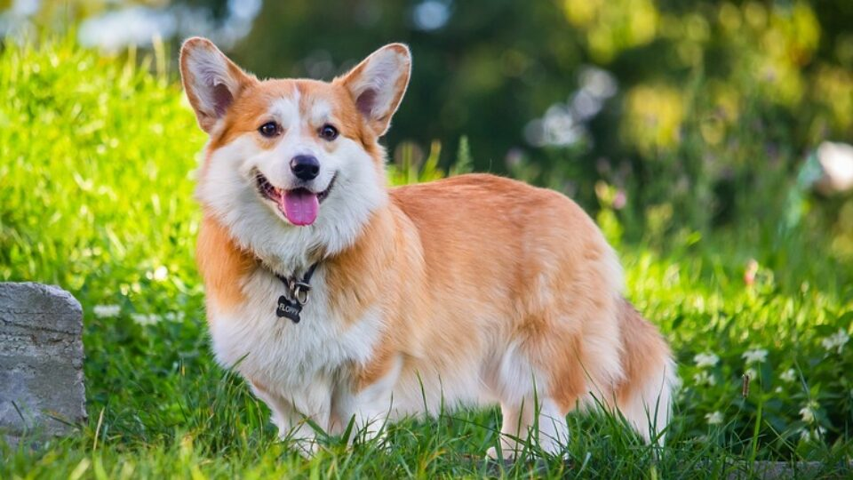
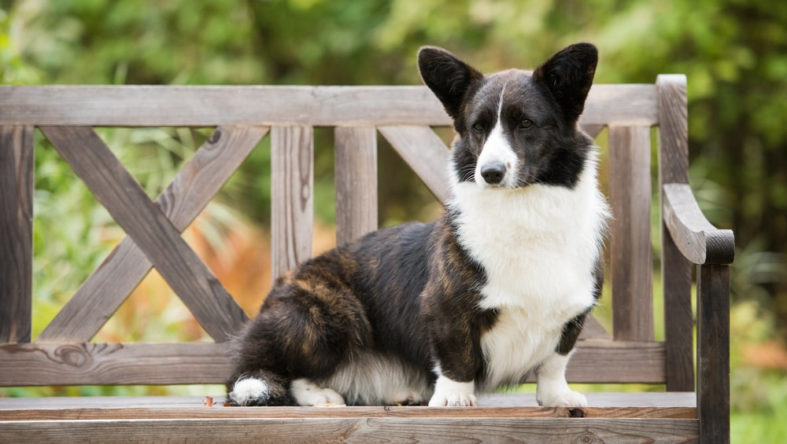

Коргі-пемброк
Коргі — це невисокий, міцний собачка з присадкуватим тулубом і «лисячою» мордою.
Його пряма
водостійка шерсть середньої довжини може бути рудого, соболиного, палевого, чорно-коричневого кольорів, з
білими плямами або без.
Дорослі пемброки мають зріст 25–30 см; пси важать 10–12 кг, а суки — 9–11 кг.
Походження
Записи свідчать, що порода собак вельш-коргі-пемброк існує у Великобританії як мінімум з 920 року.
Вважається, що їх привезли до Уельсу фламандські ткачі, і в XIV–XVIII століттях їх часто використовували для
заганяння худоби.
Коргі-кардиган та коргі-пемброк були визнані окремими породами у Великобританії в
1934 році.
Риси характеру
Коргі-пемброк — зазвичай слухняний, активний собачка. Представники породи сміливі, товариські та
доброзичливі — великі собаки в маленьких тілах. Вони слухняні і віддані родині, а також ідеально підходять
активній, зайнятій сім'ї.
Хороші пильні охоронці, які обов'язково повідомлять про прихід незнайомців.
Здоров'я
Вельш-коргі-пемброк — загалом дуже міцна порода. Як і багато інших порід, вони можуть
страждати на різні
спадкові захворювання очей та дисплазію кульшового суглоба (стан, який може призвести до проблем з
рухливістю).
Тому
перед розведенням слід обстежувати очі та стегна. Через свою форму тіла вони схильні до захворювань
хребетних
дисків.
Вправи
Хоча у нього і короткі лапи, але коргі-пемброк був виведений для загону худоби і тому дуже енергійний.
Для
дорослого собаки потрібно не менше години повсякденного навантаження.
Харчування
Дієта вашого собаки повинна мати правильний баланс з усіх головних груп поживних речовин і
включати постійне
забезпечення прісною водою.
Важливо регулярно оцінювати стан тіла, щоб перевірити, чи залишається ваш
собака
в ідеальній формі, а також не забувати годувати його принаймні двічі на день та згідно з рекомендаціями щодо
призначеної
для нього їжі.
Грумінг
Шерсть коргі-пемброка середньої довжини, пряма і водостійка з щільним підшерстям. Ця шерсть не потребує
багато часу на грумінг.
Але собак потрібно іноді розчісувати щіткою, щоб прибрати відпалу і відмерлу
шерсть. Якщо вони були
на відкритому повітрі і забруднилися, бруд легше буде зібрати, коли шерсть висохне.
Найкращі породи собак для дітей
Хоча традиційно вважається, що багато собак добре ладять з дітьми, усім собакам і дітям потрібно вчитися
тому, як спілкуватися і поважати один одного, щоб їм було безпечно разом.
І навіть при такому вмінні
собак і малих
дітей ніколи не слід залишати разом без нагляду дорослих, які повинні завжди спостерігати за усіма їхніми
контактами.